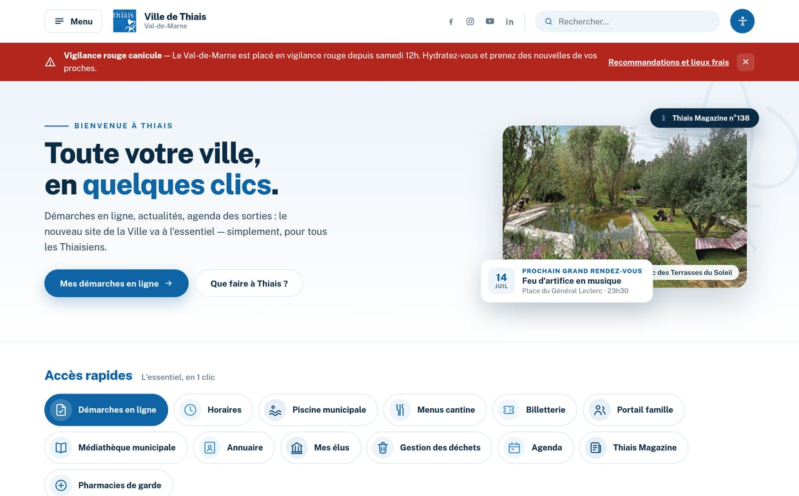
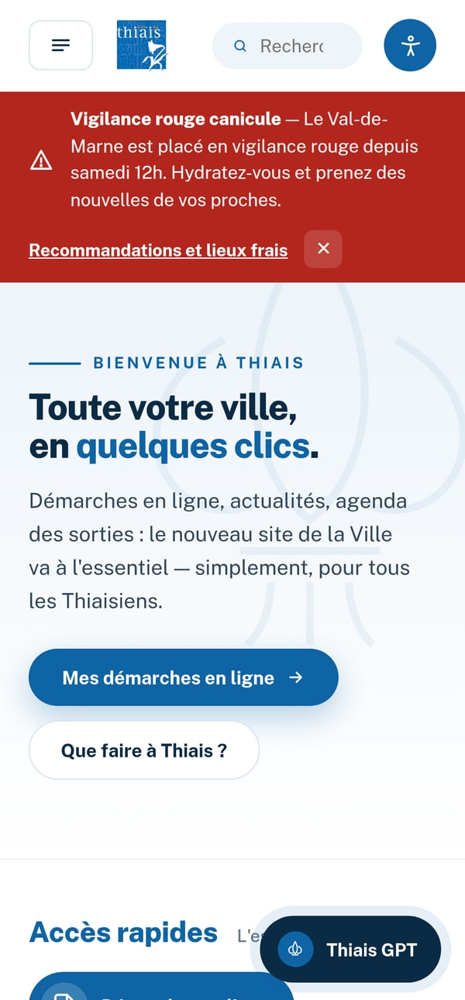
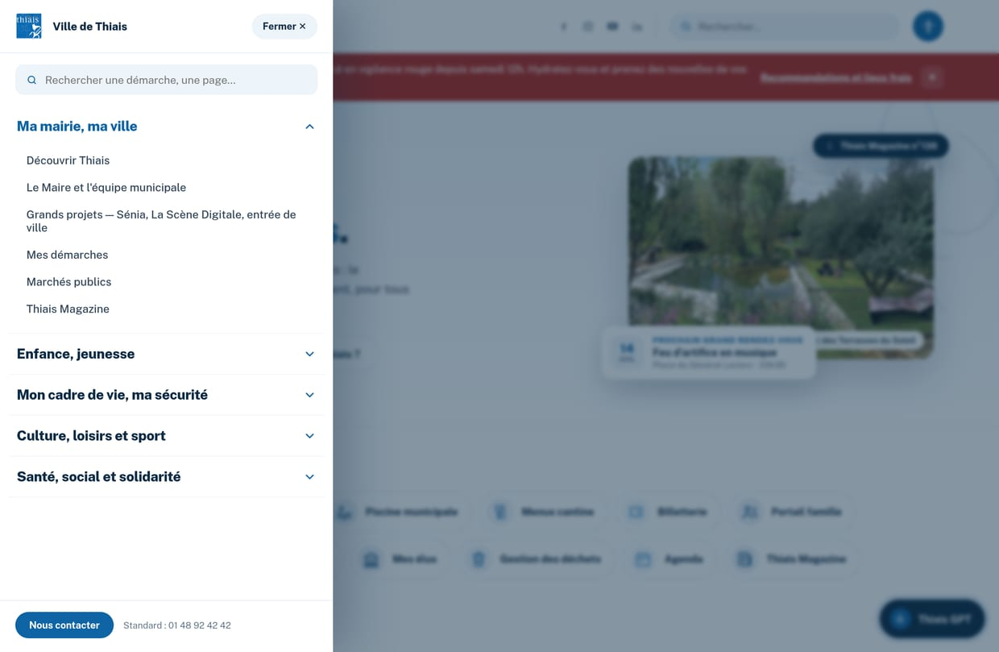
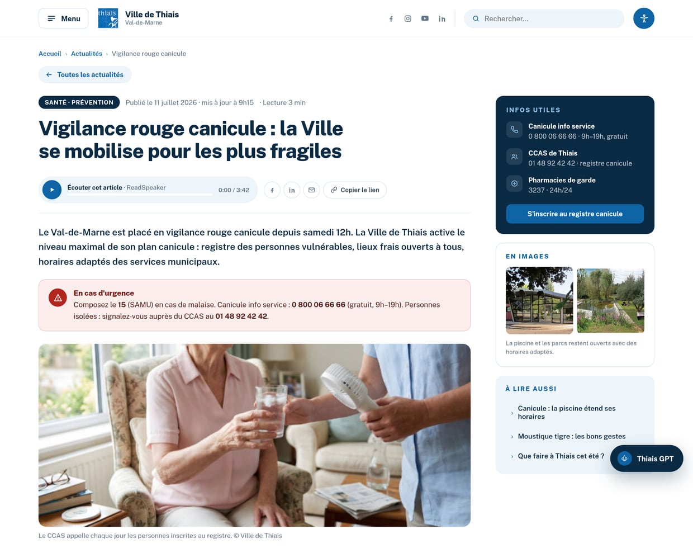
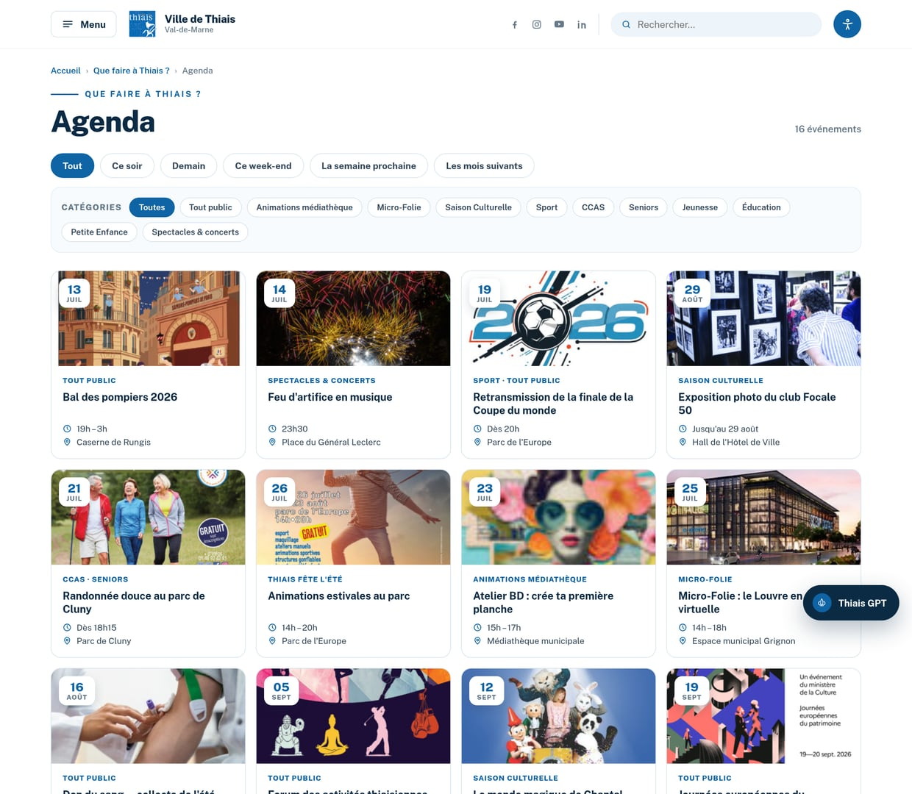
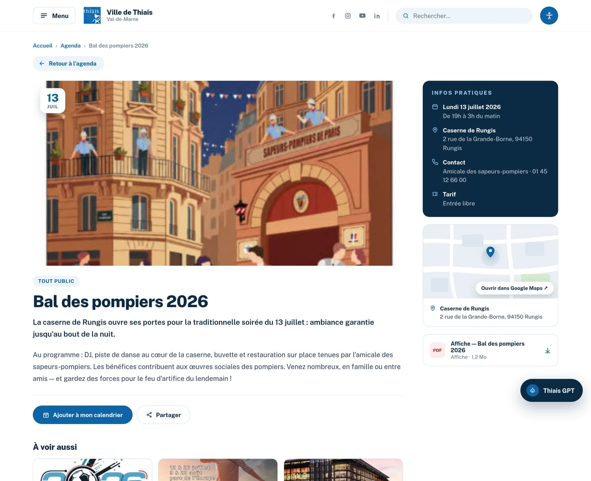

Ville de Thiais · Consultation n°26PA12SE · Critère 2.1
Maquettes fonctionnelles — version 1 · Juillet 2026
Plus qu'une image : une maquette qui se visite
Les écrans de ce document sont de vraies captures de la maquette réellement navigable : cliquez, filtrez l'agenda, ouvrez le menu, dialoguez avec le chat « Thiais GPT ».
Ouvrir la maquette ↗Scannez pour
visiter la maquette
URL publique : {{ displayUrl }}
Chaque reproche adressé au site actuel (section III du CCTP) trouve une réponse visible et testable dans la maquette.
✕ « Aucun indicateur de chargement »
→ Loader « lys de Thiais » au premier accès (CCTP §k) et barre de progression à chaque navigation.
✕ « Moteur de recherche présent deux fois »
→ Une recherche unique, en haut à droite du header — sur toutes les pages.
✕ « Photos trop lourdes, trop de place »
→ Photos cadrées serré, légères ; l'information prime. Fond blanc, blocs bleu clair pour rythmer.
✕ « Outil d'accessibilité en panne »
→ Bouton accessibilité permanent : taille de texte, contraste renforcé, lecture audio ReadSpeaker (§m) — RGAA dès la conception (décret n°2019-768).
✕ « Retours accueil / actualités peu clairs »
→ Logo = retour accueil fiable sur tous les écrans ; fil d'ariane et bouton « Toutes les actualités » sur chaque contenu.
✕ « Police du menu pas assez lisible »
→ Menu overlay en Public Sans 20 px gras, contrastes AA, déploiement progressif de gauche à droite.
Chaque écran ci-dessous est une vraie capture de la maquette en ligne, pas un schéma. Les pastilles numérotées relient un élément de l'interface à l'exigence du CCTP qu'il satisfait ; le QR ouvre l'écran pour le manipuler.

3 4 1 2Capture réelle — accueil desktop 1440 px. Suivent : 13 accès rapides · actualités · agenda · kiosque · vidéos · footer.

Ouvrir M1
Mobile ci-contre.
Scannez ou cliquez ↗

1 2 3 4Capture réelle — déploiement progressif de gauche à droite, page assombrie, fermeture évidente.
Ouvrir M2
Bouton « Menu », en haut à gauche.
Scannez ou cliquez ↗

1 2 3 4Capture réelle — hiérarchie éditoriale aérée, accordéons repliables, documents PDF joints (poids annoncé).
Ouvrir M3
Scannez ou cliquez ↗

1 2 3 4Capture réelle — 16 événements réels de Thiais (Bal des pompiers, finale Coupe du monde, Chantal Goya, Corrida…).
Ouvrir M4
Scannez ou cliquez ↗

5 6 7 8Capture réelle — fiche événement : date, horaires, contact, tarif, itinéraire.
Fiche événement
La maquette n'est pas un dessin : c'est la préfiguration du futur front. Chaque exigence du CCTP y trouve une intégration native.
| Exigence CCTP | Réponse proposée |
|---|---|
| Performance, sécurité, éco-conception | Front Next.js (rendu statique, pages légères) + WordPress headless : les agents conservent leur outil éditorial, formés et autonomes. |
| Chat IA « Thiais GPT » (§j) | Bulle discrète en bas à droite, réponses sourcées sur les contenus du site — simulée dans la maquette, cliquable. |
| Accessibilité RGAA (décret n°2019-768) | Contrastes AA, focus visibles, navigation clavier, lecture audio ReadSpeaker (§m), tailles de texte ajustables. |
| Loader identitaire (§k) | Le lys de Thiais dessiné en animation d'ouverture, décliné en favicon et ponctuation graphique. |
| Pop-ups programmables (§i) & formulaires à quota (§h) | Encart app mobile programmable démontré en accueil ; formulaires avec jauges de places côté back-office. |
| Écosystème existant conservé | Newsletter Brevo, app Neocity, billetterie, Espace citoyens, Calameo, Google Maps (§l) : intégrés tels quels. |
Charte de la Ville conservée : les bleus sont pipetés sur le logo. Fond blanc dominant, jamais plus de trois bleus.
Bleu Thiais #0E64A5
Marine #0B2B45
Bleu clair #EDF4FA
Blanc fond principal
Gris texte #33475B
Typographie
Public Sans
Sans-serif institutionnelle, open source (design system de l'État américain). Titres denses 700–800, corps 16 px minimum, menu très lisible.
Signature graphique
Le lys de Thiais, redessiné au trait : loader de page (§k), favicon, filigranes discrets, avatar du chat.